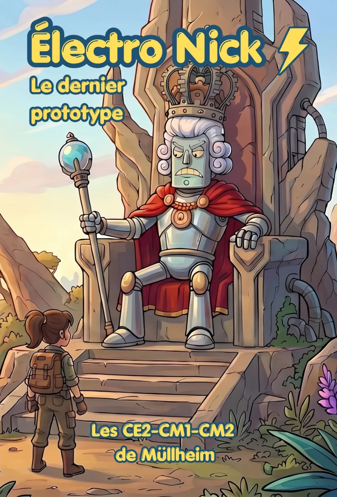
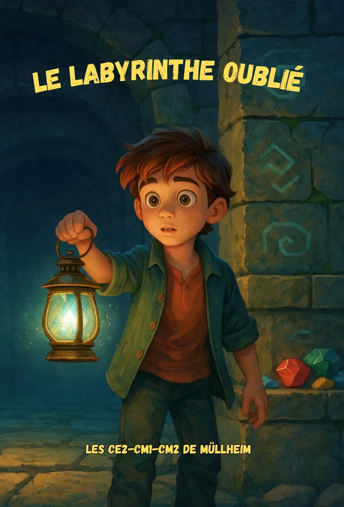
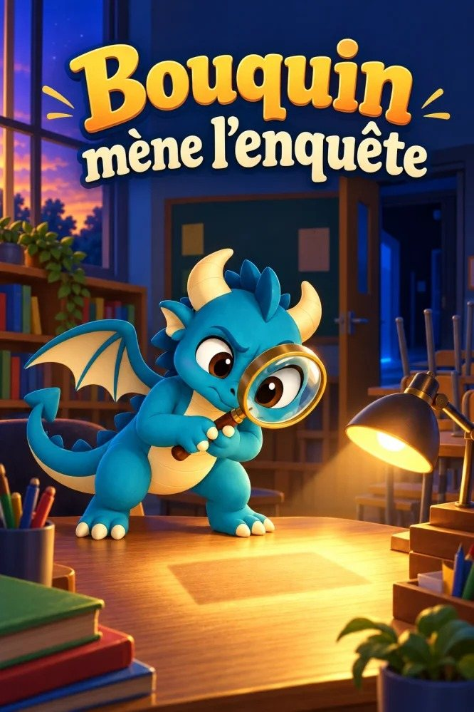
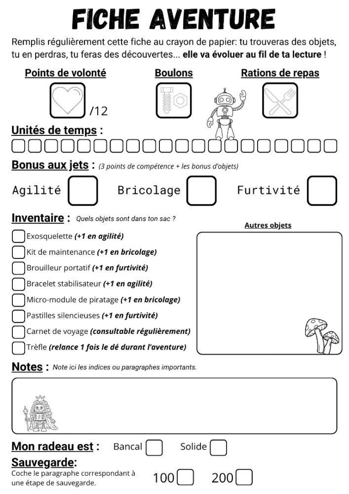
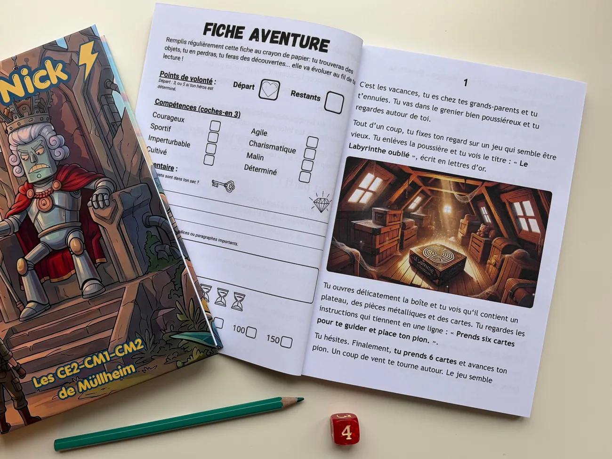

Guide
Comment écrire un livre dont vous êtes le héros avec sa classe
Un livre dont vous êtes le héros, ou livre-jeu, est un récit découpé en scènes numérotées où le lecteur choisit la suite : à la fin d’une scène, il se rend au numéro de son choix. L’écrire avec sa classe, c’est inventer l’aventure ensemble, puis se partager l’écriture des scènes, que l’enseignant relie en un seul livre.
Par Nicolas Coussot, professeur des écoles. Mis à jour le 30 octobre 2026
En bref
- Quatre ans de livres écrits avec des élèves du CE2 au CM2 (8 à 11 ans), dont deux de 213 et 323 scènes.
- Deux séances d’une heure par semaine : une période pour un premier livre, trois mois pour un grand.
- Un ou deux élèves par chapitre, selon l’effectif et la taille du livre ; environ trois obstacles par chapitre.
- Une vingtaine d’heures de travail pour l’enseignant.
- De 5 à 30 € l’exemplaire imprimé, selon le nombre de pages, la couleur et les images.
Pourquoi écrire un livre-jeu avec sa classe ?
SommaireLa production d’écrits demande beaucoup de travail, et elle passe souvent à la trappe. Un livre dont vous êtes le héros change la donne : c’est un projet qui porte la classe pendant des mois et qui vous oblige à tenir le rythme. La classe attend son livre ; on ne saute plus les séances d’écriture.
Un vrai livre, à leur portée. Pour un enfant, écrire un livre, c’est pour les écrivains. À la fin du projet, il en tient un entre les mains, avec son nom dedans ; il en est fier et le garde toute sa vie. Le format le rend possible : une scène tient en une demi-page, un morceau court et fini qui compte autant que les autres. Pas besoin d’écrire un roman pour être auteur.
Tout le monde est auteur. Les élèves les plus en difficulté écrivent volontiers et se sentent autant dans le livre que les autres, même avec moins de scènes. Pour un élève accompagné, réduisez la quantité, guidez davantage la consigne, proposez une image pour lancer l’imagination ; il peut aussi devenir l’illustrateur de l’équipe.
Des lecteurs qui joueront le livre. On soigne et on relit parce que quelqu’un va jouer : un chemin qui ne tient pas bloque le lecteur, et les élèves le prennent au sérieux. Et un livre-jeu ne se lit pas qu’une fois : on y revient pour tenter un autre chemin, il passe en famille, chez les frères et sœurs, dans les autres classes.
Dans ma classe
Une fois, nous avons écrit deux heures d’affilée, en silence, sans une plainte et sans discipline à faire : brouillon sur feuille, saisie à l’ordinateur, remarque du maître, reprise, validation, scène suivante. Toute la classe a levé la main pour venir en APC continuer à écrire. Les plus rapides proposent d’eux-mêmes d’aider ceux qui peinent à finir leur chapitre, au lieu de considérer qu’ils ont terminé. Et une ancienne élève de CM2 a apporté le livre, l’année suivante, en cours de français de 6e.
Et les programmes ? En CM, le programme de français du cycle 3 demande des écrits longs, écrits à plusieurs, avec brouillons et révisions : un livre-jeu en est un. Le détail est sur la page « Ressources ».
À partir de quel âge ?
SommaireCe n’est pas tant une question d’âge que de savoir qui tient le crayon. À tout âge, la classe invente l’univers et décide des choix ; ce qui change, c’est qui écrit. Dès qu’un élève sait écrire seul un court paragraphe, il peut écrire ses scènes. Avant, l’adulte écrit sous la dictée.
En CP et en CE1 (6-7 ans). Écrivez d’abord tous ensemble : la classe imagine, vous écrivez au tableau. Passez ensuite aux groupes, toujours en dictée à l’adulte. Gardez des choix simples et une histoire courte.
Du CE2 au CM2 (8-11 ans). Chaque élève écrit ses scènes. Vous passez de l’un à l’autre au fil de l’année, ou au fil des années : toute la classe, puis des groupes, puis chacun sa scène.
Au collège (11-15 ans). La méthode vaut jusqu’en 3e, et vous pouvez confier davantage aux élèves : organiser eux-mêmes leur chapitre et ses choix, ajouter des objets ou des énigmes, vérifier que tous les chemins mènent quelque part.
Une classe à plusieurs niveaux, un seul livre. Le même projet réunit tout le monde : les plus grands écrivent davantage ou prennent les scènes délicates, les plus jeunes écrivent moins, et tous sont auteurs du même livre.
Dans ma classe
J’ai écrit des livres avec des élèves de CE2, de CM1 et de CM2, et, plus simplement, avec des plus jeunes : tous ensemble, puis par groupes, sous la dictée.
Par quoi commencer ?
SommaireLisez et jouez des livres-jeux, tous ensemble. Avant d’écrire, lisez à voix haute des livres à choix ; à chaque choix, la classe vote. C’est un moment détendu : on joue, on n’analyse pas encore. Commencez par des livres au fonctionnement très simple, puis passez à des livres au système de jeu plus riche, avec des objets, des énigmes, des pièges.
Puis démontez-en un. Dans une séance à part, reprenez un livre simple et regardez comment il marche : les numéros, les choix, les fins. Comparez les sortes de choix rencontrées. Demandez à la classe ce qu’elle a aimé et ce qu’elle ne veut pas dans son propre livre : cette liste lui servira à fixer ses règles.
Montrez que c’est possible. Un livre écrit par une autre classe répond tout de suite au « c’est pour les écrivains ». Si vous n’avez pas encore de livres des années précédentes, la bibliothèque d’Il était une classe en propose à lire en ligne.

Électro Nick323 passages
Le labyrinthe oublié213 passages
Bouquin mène l’enquêtelivre d’exempleAvant de vous lancer, décidez de trois choses. Le rythme : deux séances par semaine tiennent bien. Le support : brouillon sur papier, puis recopie à l’ordinateur si la classe en a. Et la façon de rattraper les retards : des feuilles en devoirs, des séances d’APC. Selon sa taille, un livre prend une période ou plusieurs.
Dans ma classe
Je lis d’abord la série Ma première aventure, pour la mécanique la plus simple, puis la série Tu es le héros de Larousse Jeunesse, au système de jeu plus évolué. On décortique ensuite un Ma première aventure, simple et répétitif, et on étudie les choix des Larousse. Les livres de mes classes précédentes servent aussi de modèles.
Comment inventer l’histoire ensemble ?
SommaireAvancez par étapes, dans cet ordre : l’univers, les personnages et le héros, l’enjeu, puis les grandes parties de l’aventure. À chaque étape, chacun propose, on regroupe au tableau, on discute, on vote ; vous tranchez quand il le faut. Écrivez ce que la classe retient et gardez-le affiché pendant tout le projet : c’est la référence de tous. Une idée écartée n’est pas perdue ; elle reviendra comme personnage, lieu ou obstacle d’un chapitre.
Fixez l’enjeu avant de découper. Décidez du problème du héros et, dans les grandes lignes, de la façon de le résoudre. Tous les chapitres y mènent, et les obstacles naissent d’une seule question : qu’est-ce qui l’empêche d’y arriver ? La toute fin peut attendre.
Gardez-vous des surprises. Écrivez vous-même quelques scènes que la classe découvrira : une quête secondaire, ou le moyen de vaincre le méchant, que vous seul connaissez. Les élèves auront, eux aussi, le plaisir de la découverte.
Décidez des règles ensemble. Un héros ou plusieurs ; la personne et le temps du récit (« tu » et le présent conviennent bien à l’élémentaire, l’essentiel étant de garder le même choix dans tout le livre) ; pas de violence ; et comment on peut échouer. Sans violence, les mauvaises fins ne manquent pas : se perdre, rentrer bredouille, renoncer, être rattrapé par le temps. S’il faut une jauge, préférez des points de volonté à des points de vie.
Découpez, puis confiez les chapitres. Divisez ensemble chaque partie en chapitres. Chaque élève en choisit un, qu’il l’ait proposé ou non, et en devient responsable : seul ou à deux, il en précise les détails, les obstacles et la façon de les surmonter.
Et la première scène ? Elle pose le héros et son but. Écrivez-la ensemble, pour montrer à tous le ton avant qu’ils écrivent seuls, ou confiez-la plus tard à un élève à l’aise, quand le reste a pris forme.
Dans ma classe
Le moyen de vaincre le méchant, je suis seul à le connaître. Et je n’attribue la scène d’ouverture à personne au début : je la confie ensuite à un élève qui écrit vite et bien.
Comment répartir l’écriture entre les élèves ?
SommaireUn élève par chapitre. C’est l’idéal : chacun connaît son chapitre, et lui seul ; il découvrira le reste en lisant le livre. Selon l’effectif ou la longueur d’un chapitre, mettez-y deux ou trois élèves : ils se répartissent les scènes, puis chacun écrit la sienne seul.
Fixez les entrées et les sorties. Pour chaque chapitre, la classe décide d’où arrive le héros et vers où il repart. Entre les deux, le responsable est libre. Chacun lit tout son chapitre, mais ni la scène qui y mène ni celle qui en sort : la surprise reste entière.
Préparer son chapitre, sans schéma. Fixez le nombre d’obstacles par chapitre. L’élève choisit ceux qui arrivent au héros puis, pour chacun, les choix possibles et leurs conséquences. Une liste suffit ; un dessin en cases et en flèches est trop difficile à cet âge. C’est là que se joue le plus dur : trouver des choix qui ont un sens (voir « Comment organiser les choix ? »).
Une consigne par scène. Elle dit ce qui doit se passer et ce qu’on doit y trouver : décrire la montagne, ce que disent les personnages, leur réaction, ce que ressent le héros. Inutile de raconter ce qui précède : l’élève connaît son chapitre. Demandez chaque fois un élément d’écriture précis, en variant au fil du projet ; en se relisant, l’élève vérifie lui-même qu’il l’a mis.
Vous écrivez les choix et faites les liens. À l’école élémentaire, l’élève décide des choix de son chapitre ; vous les rédigez et reliez les scènes. Au collège, il peut organiser son chapitre lui-même.
Le parcours d’une scène. Brouillon sur papier ; si besoin, une correction ou une demande d’amélioration sur le papier ; recopie à l’ordinateur ; puis la validation, ou une reprise. Quand les ordinateurs manquent, travaillez à deux : l’un écrit, l’autre recopie. Vous pouvez aussi lire les textes manuscrits à la dictée vocale de l’ordinateur pour épargner la recopie.
Les rapides et les lents. Ceux qui ont fini écrivent les scènes hors chapitre (l’introduction, l’épilogue, une fin alternative, un point de sauvegarde), prennent une scène libre, illustrent, ou lisent leur chapitre comme un lecteur pour vérifier que tout s’enchaîne ; puis ils aident un camarade en retard, s’il le veut. Celui qui ne veut pas d’aide rattrape à la maison, avec les feuilles d’écriture, ou en APC ; tapez vous-même ses textes, pour qu’il ne passe pas son temps à recopier. Pour un élève accompagné : moins de scènes, une consigne plus guidée, une image pour lancer l’imagination ; ou le rôle d’illustrateur.
Gardez quelques scènes pour vous : celles qui surprendront la classe, et l’ouverture si vous ne l’écrivez pas ensemble.
Dans ma classe
Quand un élève peine à finir son chapitre, les volontaires en avance se proposent d’eux-mêmes et s’arrangent avec lui.
Combien de chapitres, de scènes et de choix prévoir ?
SommaireMéfiez-vous de l’arbre. Si chaque scène ouvre deux chemins qui ne se rejoignent jamais, dix décisions donnent 1 024 fins : personne ne peut écrire cela. Un livre-jeu qui tient fait se rejoindre ses branches.
Une forme simple, qui tient sur des mois. Des chapitres qui se suivent ; dans chacun, des branches qui se séparent puis se rejoignent à la sortie. Variez de temps en temps : un chapitre facultatif qu’on peut manquer, ou deux chapitres au choix, qui mènent au même endroit. À l’intérieur d’un chapitre, quelques formes éprouvées : le carrefour, scène courte où le lecteur revient et d’où partent plusieurs chemins ; les chemins parallèles ; le goulot, où tout converge vers une même scène. Que faites-vous les montre en détail.
Comptez par obstacles. Un obstacle, c’est une scène et deux ou trois choix, chacun avec sa conséquence : environ quatre scènes. Ajoutez les scènes qui font simplement avancer l’histoire, sans choix. Il y en a beaucoup, et c’est tant mieux : un choix à chaque scène épuise le lecteur. Vous connaissez ainsi la taille du livre avant d’écrire.
Pour un premier livre, une quarantaine de scènes, soit une dizaine d’obstacles. Par deux ou trois, chaque groupe d’élèves en écrit un, avec sa résolution.
Prévoyez que ça débordera. Les idées des enfants poussent l’histoire : c’est bon signe, mais ne laissez pas le livre grossir sans fin. N’ajoutez pas de chapitre une fois le plan posé ; laissez plutôt certains chapitres grandir un peu, et gardez des scènes hors chapitre pour les plus rapides : l’introduction, l’épilogue, une fin alternative, un point de sauvegarde.
Les fins. Placez une défaite dès les premiers choix : le lecteur voit que ses décisions comptent, et recommencer ne lui coûte rien. Plus loin, ne lui faites pas tout reprendre. Soit tout le monde va au bout, et seule la fin change selon sa réussite dans l’aventure. Soit, dans un long livre, des points de sauvegarde : on repart d’un numéro, avec sa feuille d’aventure telle qu’elle était à ce moment-là.
Dans ma classe
« Le labyrinthe oublié » : 13 chapitres, 213 scènes, quatre fins selon la réussite, et une fin cachée que j’avais écrite pour mettre les élèves au défi. « Électro Nick » : 19 chapitres, 323 scènes, des points de sauvegarde, et des chapitres au choix, la forêt de champignons géants ou le lac d’acide. Environ trois obstacles par chapitre, près de la moitié des scènes sans choix. Chacun a pris quatre à cinq mois ; avec une classe plus nombreuse, comptez plutôt trois.
Comment organiser les choix ?
SommaireC’est l’étape la plus difficile, pour vous comme pour les élèves. On n’y travaille pas l’écriture, mais deux compétences que nomme Que faites-vous : développer la logique narrative et comprendre les conséquences. Un livre-jeu réussi est logique ; ce n’est pas un enchaînement de choix au hasard.
Étudiez d’abord les sortes de choix. Dans les livres lus ensemble, repérez-les : le bon choix, le piège, la réussite qui coûte (on passe, mais en laissant des plumes), l’énigme. Un choix peut aussi être une attitude : avancer discrètement ou d’un pas décidé, aider l’inconnu ou passer son chemin.
Un choix de chaque sorte, puis on trie. Devant son obstacle, l’élève cherche un choix de chaque sorte. Gardez les deux ou trois plus pertinents, avec au moins un bon choix, et souvent un mauvais. Pour vérifier, faites-lui dire chaque choix à voix haute : « si le héros fait…, alors… ». S’il ne trouve pas le « alors », le choix n’a pas encore de raison.
Donnez une raison de choisir. Un indice dans le texte, un objet trouvé plus tôt, un personnage qui prévient : le lecteur attentif doit pouvoir penser qu’une option vaut mieux que l’autre. Récompensez la curiosité : un détour facultatif peut donner l’objet ou l’indice qui servira plus loin. Le hasard n’est pas interdit, à une condition : qu’il ne punisse pas. Deux chemins pris au hasard, oui, s’ils mènent à des obstacles comparables ; une défaite par simple malchance, non.
Un mauvais choix coûte, sans tout faire perdre. Selon le système de jeu, le héros perd du temps, de la volonté, de l’argent, ou l’huile de sa lanterne. Un piège qui ne coûte rien n’est pas un piège ; un piège qui fait tout perdre décourage.
La phrase du choix. Courte, avec un verbe d’action, la même forme dans tout le livre : « Pour traverser le pont, va au 12. » Elle ne dévoile pas la suite : « traverser le pont », pas « tomber du pont pourri ».
Dans ma classe
Dans « Électro Nick », traverser le désert de geysers fait perdre du temps ; mais on y gagne de la volonté, et un objet qui rapporte des boulons, la monnaie du livre.
Comment relire et garder la cohérence ?
SommaireFixez les noms avant d’écrire. Tenez une fiche commune des personnages, des lieux et des objets : leur nom, une courte description. Elle naît pendant la préparation, et c’est vous qui la tenez : un élève qui veut un nouveau personnage ou un nouvel objet le demande. Sans elle, les noms dérivent d’un chapitre à l’autre et la liste d’objets s’allonge sans fin.
L’histoire sur le papier, la langue à l’ordinateur. Sur le brouillon, regardez si l’histoire tient : la consigne est-elle suivie, la scène raccorde-t-elle, le choix a-t-il une raison ? La langue se corrige une fois le texte recopié. Chaque relecture a un seul but, et l’élève ne recopie pas un texte qu’il faudra réécrire.
La consigne fait foi. Les éléments qu’elle demande sont obligatoires : soulignez ceux qui manquent, l’élève complète. Refusez les textes trop courts : certains écrivent vite, pressés de passer à la scène suivante, et c’est en développant qu’ils apprennent à décrire.
Adaptez la reprise au niveau. Si l’élève n’a pas assez travaillé son texte, relancez-le avec une consigne de réécriture, même s’il ne s’agit que de revoir l’orthographe. S’il a fait de son mieux, corrigez le reste vous-même ou avec un correcteur ; pour les plus en difficulté, retouchez aussi un peu la grammaire, pour que le texte se comprenne. Deux reprises au plus : ensuite, finissez la scène, ou reprenez-la à côté de lui.
Les raccords. En recopiant, l’élève relit la fin de la scène qui mène à la sienne ; une fois son chapitre écrit, il le lit d’un bout à l’autre comme un lecteur et corrige ce qui ne s’enchaîne pas. Entre deux chapitres, c’est vous qui vérifiez, en faisant les liens.
Dans ma classe
Je ne laisse aucune faute dans le livre final, ni phrase bancale. Ou alors pas volontairement !
Faut-il des objets, des énigmes ou un dé ?
SommairePour un premier livre, une seule variable. Des compétences, une jauge comme la volonté, ou des objets : choisissez-en une. Le dé peut attendre. Ensuite, laissez l’histoire décider : un livre court s’en tient à une ou deux variables, un livre long peut se permettre un système plus riche.
Une variable qui vient de l’histoire. Plutôt que des « points », comptez ce que l’histoire rend important : des rats sauvés, du temps, l’huile d’une lanterne, de la volonté. La règle se retient mieux, et chaque perte ou chaque gain se raconte.
Des règles qui s’expliquent vite. Elles se lisent au début du livre, avant la première scène, et figurent en tête de la feuille d’aventure. Si une règle ne s’explique pas simplement à un enfant de 9 ans, elle est de trop.
Des objets qui servent. Peu d’objets, chacun avec un usage prévu à l’avance et inscrit sur la fiche commune : un objet qui ouvre un choix (« Si tu as la clé, va au 31 ») ou qui évite un piège. Un objet ramassé qui ne sert à rien déçoit. Une exception amusante : le magasin, où l’on peut acheter des choses inutiles et dépenser son argent pour rien.
Construire son héros. Proposez par exemple six compétences ; le lecteur en choisit deux. Dans l’histoire, certains choix en dépendent : « Si ton héros est courageux, tu peux… ».
Le dé, avec une seule règle. Un jet : le dé plus la caractéristique doit atteindre un nombre fixé. Un jet raté coûte un point, du temps ou un détour, jamais la partie à lui seul, sauf si c’était le dernier point.
Les énigmes. Elles sont difficiles à inventer : discutez-en la forme avec les élèves, et écrivez souvent l’énigme vous-même. La réponse donne un numéro. Si c’est le bon, la scène commence par un mot annoncé à l’avance, « Bravo » par exemple ; sinon, le lecteur tombe sur une autre scène du livre et comprend qu’il s’est trompé.

Dans ma classe
Une de nos histoires comptait les rats sauvés, des points de volonté et des unités de temps. Pour mon plus long livre, les règles étaient plus complètes, surtout pour les jets de dé ; avec le recul, c’était peut-être trop.
Comment vérifier que tous les chemins mènent quelque part ?
SommaireChacun teste son chapitre. Une fois son chapitre écrit, l’élève le joue comme un lecteur, revient en arrière, essaie toutes les possibilités et corrige ce qui ne s’enchaîne pas. Il ne joue que le sien : le reste, il le découvrira dans le livre.
Vous jouez le livre entier, plusieurs fois. C’est vous qui vérifiez les raccords entre chapitres et l’équilibre du jeu : le livre doit pouvoir se finir, sans être trop facile.
Contrôlez les liens. Sur papier, faites un tableau : une ligne par scène, avec les scènes vers lesquelles elle mène ; cochez chaque scène chaque fois qu’elle apparaît comme destination. Une scène jamais cochée est orpheline ; une destination absente du tableau est un choix sans issue.
Réparez. Les liens et les numéros, c’est vous ; un texte qui ne raccorde pas retourne à son auteur.
Numérotez à la toute fin. Numéroter en cours de route oblige à tout renuméroter à chaque scène ajoutée. Une fois tout vérifié, fixez d’abord les numéros qui doivent l’être : ceux des énigmes, puisque la réponse donne le numéro, et ceux des sauvegardes. Puis mêlez plusieurs chapitres, pour que les scènes d’un même chapitre ne se retrouvent pas côte à côte, et tirez au sort.
Dans ma classe
J’ai vérifié les liens dans un tableur. C’était franchement fastidieux.
Combien de temps faut-il ?
SommaireDeux séances d’une heure par semaine suffisent. Alternez la feuille et l’ordinateur : beaucoup d’élèves aiment taper leur texte, et pour certains, c’est la récompense du brouillon fini.
Deux formats. Un premier livre d’une quarantaine de scènes s’écrit en une période ; un grand livre de 200 à 300 scènes, en trois mois environ. Sans compter la découverte des livres-jeux, avant, ni l’impression, après.
Les étapes d’un grand livre.
| Étape | Durée |
|---|---|
| Découvrir des livres-jeux | une période, pendant les temps calmes |
| Étudier leur fonctionnement | 2 séances |
| Préparer l’histoire | 2 séances |
| Préparer les chapitres : obstacles, choix, conséquences | 2 séances |
| Mettre en place les scènes et les consignes (vous) | un temps de vacances |
| Écrire | une ou deux périodes |
| Mettre en page, illustrer | environ une semaine |
| Imprimer et recevoir les livres | moins de deux semaines |
Dans l’année. Découvrez les livres en période 2 (novembre-décembre), préparez l’histoire en période 3 (janvier-février), écrivez en périodes 4 et 5 (mars à mai). Finissez l’écriture fin mai : juin reste pour la mise en page, l’impression et la lecture.
Votre temps. Mettre en place les chapitres, les scènes et les consignes est la phase la plus longue pour vous. Gardez-lui un temps de vacances, pour bien faire sans courir.
Dans ma classe
Je compte une vingtaine d’heures de travail de mon côté, sur tout le projet.
Comment illustrer, imprimer et partager le livre ?
SommaireDeux façons d’illustrer. Les élèves dessinent : chacun illustre son chapitre, avec une règle commune (même format, même matériel) pour que le livre garde son unité. Ou vous créez les images avec une IA : le rendu est plus proche d’un vrai livre, les élèves aiment la surprise, et vous gagnez du temps. Ils peuvent décrire l’image qu’ils veulent ; c’est vous qui la créez.
La couverture. Faites-la vous-même, ou confiez-la aux élèves.
Dans ma classe
Je préfère les images faites par IA, et je fais la couverture moi-même. Mes élèves sont d’abord fiers d’avoir écrit un vrai livre : un dessin d’enfant en couverture ferait la fierté d’un seul, au détriment de celle de tous. Je veux un livre qui en jette. C’est une préférence personnelle.
Imprimer. Un imprimeur en ligne qui imprime à l’exemplaire suffit. Proposez le livre en précommande aux familles, avec le choix entre un intérieur en noir et blanc et un intérieur en couleur. Pour notre plus grand livre, plus de 300 scènes et 150 illustrations, l’exemplaire coûtait en 2026 environ 12 € en noir et blanc et 29 € en couleur ; un livre plus court coûte moins. Comptez une à deux semaines de livraison.

Un exemplaire d’essai d’abord. Commandez-en un, vérifiez que tout va bien, lisez-le ensemble en classe ; puis lancez l’impression pour les élèves. Vous pouvez aussi laisser chacun découvrir le livre à la maison.
Faites-le vivre. Un exemplaire pour la bibliothèque de l’école, une lecture à d’autres classes, une version en ligne pour les familles qui ne peuvent pas l’acheter.
Les autorisations. Les textes et les dessins appartiennent aux élèves. Avant toute diffusion publique, en ligne notamment, demandez l’accord écrit des familles ; un modèle d’autorisation est sur la page « Ressources ».
Les erreurs à éviter
Sommaire- Sous-estimer le temps. J’ai déjà fini avec des livres livrés juste avant les vacances. Terminez l’écriture fin mai (voir « Combien de temps faut-il ? »).
- Un système de jeu trop compliqué. J’en ai fait un, difficile à équilibrer. Commencez par une seule variable (voir « Faut-il des objets, des énigmes ou un dé ? »).
- Laisser le livre grossir avec les idées. Plus de chapitre nouveau une fois le plan posé ; les idées en trop vont aux scènes hors chapitre (voir « Combien de chapitres, de scènes et de choix prévoir ? »).
- Un choix qui sanctionne sans raison. Gauche ou droite, oui, si les deux chemins se valent ; une défaite sans indice pour l’éviter, non (voir « Comment organiser les choix ? »).
- Numéroter en cours de route. Chaque scène ajoutée oblige à tout renuméroter : numérotez à la toute fin (voir « Comment vérifier que tous les chemins mènent quelque part ? »).
- Ne pas tester. Chaque élève joue son chapitre, et vous le livre entier, plusieurs fois, avant l’impression.